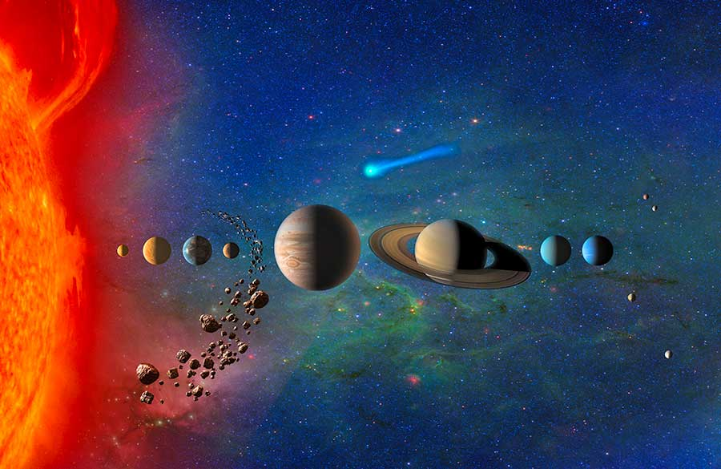

Sualtı Yaşamı

Dünya veya Yerküresi, Merkür ve Venüsten sonra Güneş‘e en yakın 3. gezgendir. Gezegenimiz karasal gezegenlerden en büyüğü olmakla yanısıra kitle ve büyüklük acısından da beşinci gezegendir. Bilim adamlarının yaptığı hesaplamalara göre Dünyanın oluşu 4.54 milyar yıl önceye dayanıyor. Dünya şuana kadar bilinen yaşam destekli tek gezegendir.
Uzun yıllar boyunca Dünyanın evrenin tam merkezinde olduğu ve diğer tüm gök cisimlerinin de Dünyanın etrafında döndüğüne inanılmıştır. Antik astronomlar Dünyanın sabit durduğunu sanmış, Asuriler ve Sümerler Dünyanın büyük bir kaplumbağanın, öküzün belinde olduğuna zann etmişler. İlk olarak 1543 yılında Kopernik Güneşin merezde olduğu bir Güneş Sisteminin modelini yayınlamıştır.
Hakkımda bilgi edinmek istiyorsan